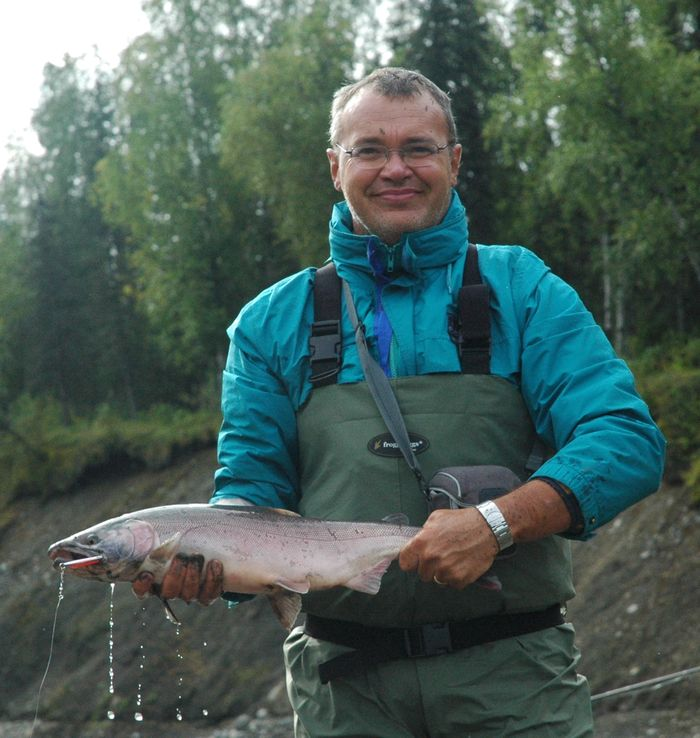

Gaetano Gentili
Presidente
Ecologia degli ambienti acquatici; professore a contratto del corso di Acquacoltura all'Università degli Studi di Milano
«Mai fidarsi troppo!»
Titolo di studio e biografia
Titolo di studio. Dottore in Medicina Veterinaria, iscritto all'Ordine dei Medici Veterinari della Provincia di Varese con il n. 232.
Mi chiamo Gaetano Gentili, sono veterinario dal 1988 e insieme ad amici e colleghi ho fondato GRAIA nel 1991. Ho cominciato la mia professione occupandomi di animali in ambiente naturale, poi la mia attività si è sempre più indirizzata verso l'ecologia degli ambienti fluviali, con particolare riferimento all'ecoidraulica. Le responsabilità, anche amministrative, in GRAIA mi portano comunque a seguire progetti più diversi nell'ambito della tutela e della gestione degli ambienti e delle risorse naturali. Ho la fortuna di lavorare con colleghi ed amici dalle formazioni e professionalità più diverse e questo non solo mi ha arricchito culturalmente ma mi consente di fare un lavoro straordinariamente vario e diverso quasi ogni giorno.